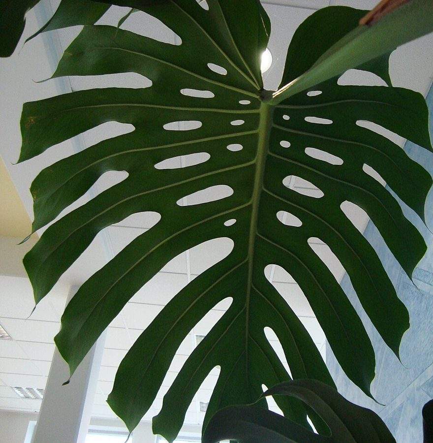

カフェ / 群馬県富岡市
上州やなぎや

群馬県富岡市にあるカフェ「上州やなぎや」のご案内ページです。営業時間やメニューなどの詳細は準備中。まずはInstagramをのぞいてみてください。
制作側の連想
「やなぎや」から考えた、柳の糸の長さ比べ
屋号の由来は分かりません。制作側は「やなぎや」の響きから、枝垂れる柳の細い枝を連想しました。長いもの、短いもの、さまざまな長さの糸が一本の枝から垂れ下がる姿にならい、このページは「長さのちがう縦の糸」で情報を並べています。お店の理念・由来とは無関係の、制作側の連想です。
五本の糸
お店のご案内
確認できているのは所在地とInstagramだけ。ほかは準備中です。
- 所在地群馬県富岡市富岡1031-3
- Instagram@_yanagi_ya
- 電話なし
- 営業時間・定休日準備中
- メニュー・ご予約・駐車場準備中
イメージ写真
縦の糸のかたわらで
お店の写真ではありません。縦に並ぶ線のイメージで選んだ、国外・撮影地不明のフリー素材です。


